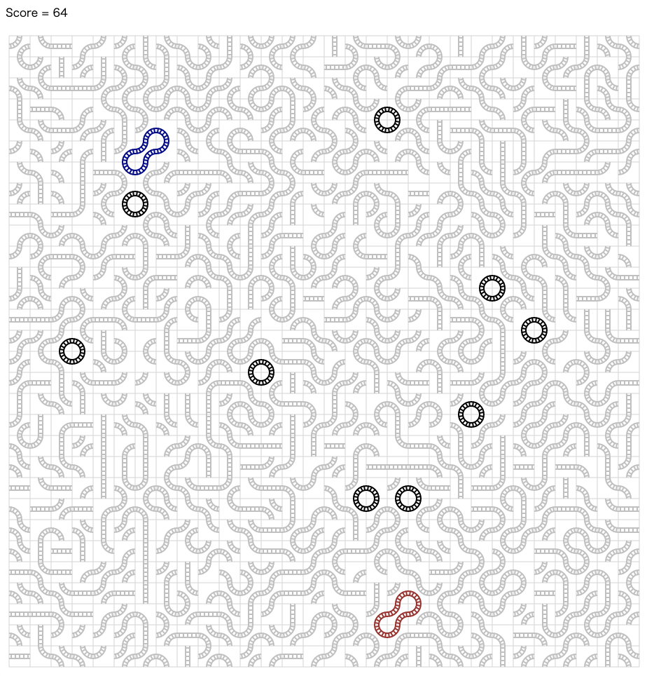

ALGO ARTISプログラミングコンテスト 2022(AtCoder Heuristic Contest 010)¶

問題概要¶
- 30 * 30 マスのタイルがあり、タイルにはレールがついている
- タイルは、向きを区別すると8種類
- 各タイルを回転させて、レールでできるだけ大きな閉路を 2 つ作りたい
- 2 つの閉路の長さの積を最大化せよ
時間¶
240 分
個人的メモ¶
- 長いサイクルをどう作るか、が難しい問題
- ざっくり、「小さいサイクルをどんどん大きく/拡大縮小で調整していく」か「領域にわけてパスを見つけ、それをつなぐ」というのが強かった模様
- ただ、実装が間に合わなかった(方針が見えなかった/ミスった、考察に時間がかかった、実装量が多くなった、バグらせた、など)人が多いかもで、ある程度の方針で実装しきれれば良い順位になれた回かも
- 結構どの方針でもそこそこ実装量が必要だった
- 上位狙いで提出諦めた人もまあまあいた？
問題固有の性質¶
(解説放送でのwataさんの手法より)
- 1タイルに2レールがあるタイル(タイル番号4,5)は、そのタイルで2つの異なるサイクルが共有している場合、回転させることで、その2つのサイクルを大きな1つのサイクルにすることができる
- さらに、そのようなタイルは全体の50%の確率で生成されているので、結構多い(半分はこのタイル)
- この性質に気づけて活用できていた人はかなり少なかったぽいかも(twitterを見た感じだと6人ぐらい？多くの人はDFSで探索)
最適解の形¶
- 「サイクルの長さ」を長くしたいので、大きな○なサイクルというより密度の高いサイクルを目指す必要がある
- また、「2つ」のサイクルの積なので、2つのサイクルはだいたい領域の半分半分が埋まっている感じなのが理想的
サイクルの作成¶
- そもそもサイクルを作るのが難しい
- 最終的には「長いサイクル」を作らないといけないのでさらに難しい
- パスを長くすればよいわけではない(始点に戻ってくる必要がある)
- ランダムに、タイルを選んで回転させ、偶然サイクルができるのを待つ
- ランダムにまかせてても、(長い)サイクルはほとんどできないので、よくない
- ランダムウォークでパスを伸ばす
- ランダムに1本パスを伸ばしていって、ゴール地点に偶然たどり着くことに期待する
- 基本、途中で移動できなくなったり、ゴール地点にたどり着けないので、かなり失敗率が高い
- DFSやビームサーチなど複数経路を探索しないと厳しい
- DFSでサイクルを作る
- 適当なレールからスタートして、DFSでタイルを固定しながらたどって、サイクルになるものを見つける
- 偶然元の位置付近に戻るようなのを期待する
- 一度固定したタイルは回転させないようにしたいので、訪問回数をカウント(タイルを回転可能か判断)しながらDFSでたどる
- 深さ制限や時間制限などをつけないと遠くにいくものも探索したり、探索量が多くなってしまう
- が、各タイルの回転で変わるのは基本2方向なので、そんなに多いわけではない
- 進む方向は、「ランダムに選ぶ」か「順番決め打ち」
- なので、1回で長いサイクルを見つけるのではなく、探索量は少なめにして小さめのサイクルから「サイクルの拡大」をしていくのが良い
- 適当なレールからスタートして、DFSでタイルを固定しながらたどって、サイクルになるものを見つける
- 領域を分けてパスを見つけ、領域間のパスをつないでサイクル化
- 比較的「パス」は作りやすいので、全体を小さい領域に分割してその中で開始位置と終了位置を固定して長いパスを見つけておく
- あとは領域間のパスをつないであげればよい
- 乱択ビームサーチ
サイクルの拡大¶
- タイル4,5の(上の問題固有の)性質を使う
- タイル4,5を使って、そのタイルを共有するサイクルを見つけてそこを回転させればサイクルを拡大していける
- 部分破壊、DFSで再構築
- AHC002でも強かった手法
- サイクルの一部分を壊してDFSでその両端がつながるパスを見つける
- 領域にあるパスをすべて壊す、とかも考えられるが再構築が厳しい
- (部分破壊のとき、┌ ┐を┐┌(両方とも回転)にするようなケースだけを考えてたけど、タイル4,5の場合タイル4,5の方だけ回転で良い場合がある(ので、すべての回転を探索するのがよかった))
2つのサイクルサイズの調整¶
- だいたい同じ程度になってくれてたほうが良い
- 変な形になると、塞いでしまって、片方のサイクルが大きくなれなかったりしてしまう
- 全体を2分割する
- 小さいサイクルの方を拡大する
- サイクル生成をたくさん試す、多点スタート
- サイクルサイズを調整可能にする
- サイクルの拡大縮小を近傍に焼き鈍す
実装周り¶
- サイクルの実装
- 明示的にサイクルを保持する場合は、タイル4,5があってタイルの列だけだと扱いにくいので、タイルとタイル内のレールの端点(方向)の列を保持しておく
- レールの実装
- 問題ページに、長さを求め方のヒントとして、
to[t][d](タイルtにdの方向から侵入したとき次のタイルの方向)というのが書かれていた - ただ、自分は、この「方向」というのに実装が引っ張られて、ベクトル的なのと点的なのがゴッチャになってデバッグに時間が取られてしまった
- 「方向」ではなく、すべて「点」で考えて、
to[t][d](タイルtの点dにつながるもう片方の点)としたほうがよかった
- 問題ページに、長さを求め方のヒントとして、
- タイルを正規化
- https://twitter.com/tomerun/status/1518174134353600512
- 最初に向きを同じに回転させておくと、扱いやすい
その他¶
- スコア計算の高速化
- https://twitter.com/EvbCFfp1XB/status/1518169617738657794
- 特定のタイルを通るサイクルのみスコア計算する
- 理論値(付近)のイメージ？(prd_xxx さん)
- 0 点AC(gojira_kyopro さん)
解説¶
(50 位まで&発言を見つけられた方のみ)
- 1 位 takumi152 さん
- 2 位 Rafbill さん
- 3 位 hitonanode さん
- 4 位 ynasu さん
- 5 位 tomerun さん
- 6 位 kawatea さん
- 7 位 Shun_PI さん
- 8 位 bowwowforeach さん
- 9 位 mamekin さん
- 10 位 Nyaan さん
- 11 位 tashikani さん
- 12 位 WA_TLE さん
- 13 位 hiratai さん
- 14 位 ichyo さん
- 15 位 Jirotech さん
- 16 位 physics0523 さん
- 17 位 carrot46 さん
- 18 位 iwashi31 さん
- 19 位 riantkb さん
- 20 位 shibh308 さん
- 21 位 tishii24 さん
- 22 位 EmK さん
- 23 位 hasi さん
- 24 位 xyz600 さん
- 25 位 bin101 さん
- 26 位 Nachia さん
- 27 位 tute7627 さん
- 28 位 kuhaku さん
- 29 位 tokumini さん
- 30 位 cunitac さん
- 31 位 KoD さん
- 32 位 sumoooru さん
- 33 位 Moegi さん
- 34 位 wanui さん
- 35 位 fuppy0716 さん
- 36 位 rng さん
- 37 位 milkcoffee さん
- 38 位 kens さん
- 39 位 mtsd さん
- 40 位 ValGrowth さん
- 41 位 cuthbert さん
- 42 位 hoshi524 さん
- 43 位 sash さん
- 44 位 siman さん
- 45 位 MatsuTaku さん
- 46 位 yochan さん
- 47 位 zeke さん
- 48 位 toame さん
- 49 位 dn6049949 さん
- 50 位 merom686 さん